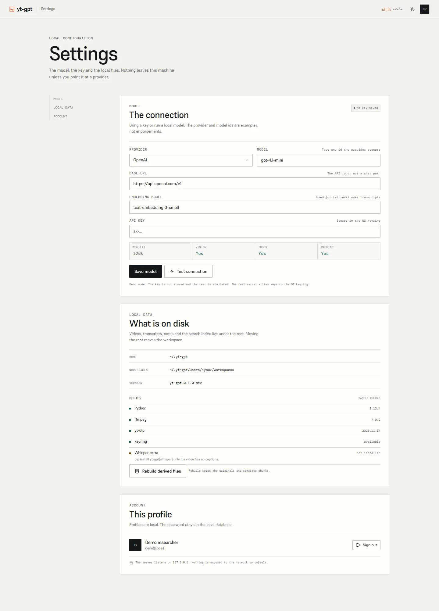
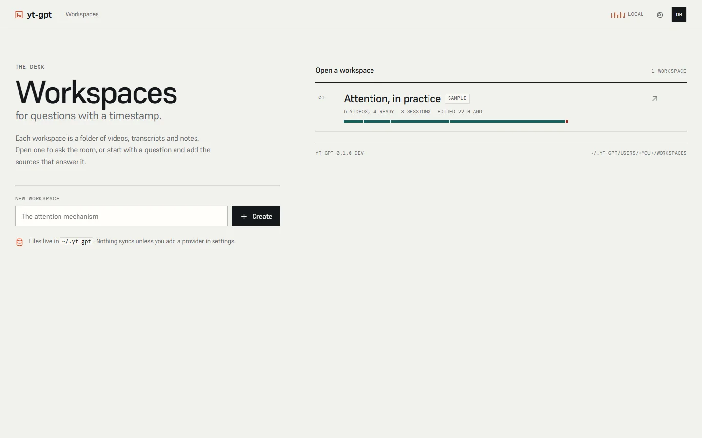
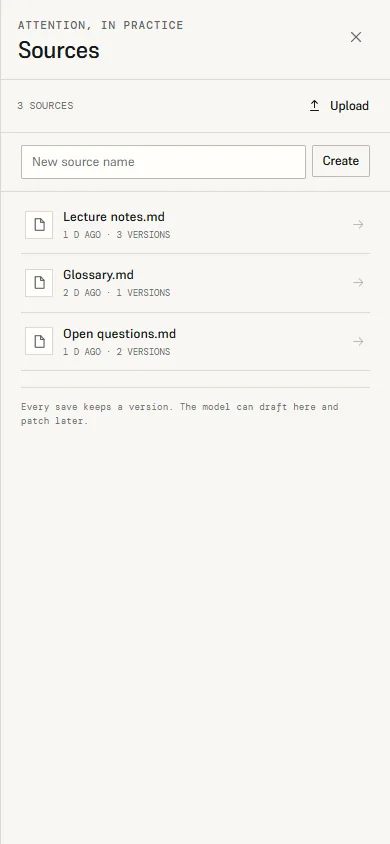
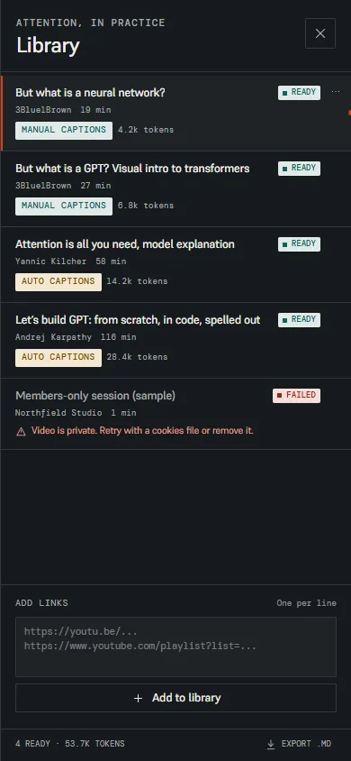
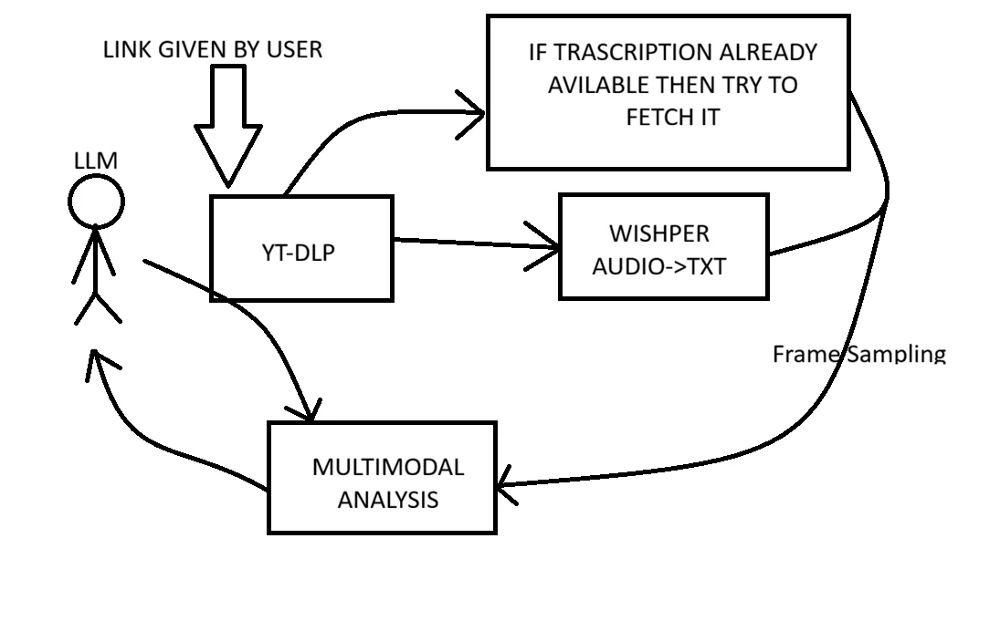

Before you start
yt-gpt runs as a local web app. You install it with pip, start a server, and open a browser. There is no account on someone else's machine.
- Python 3.11 or newer. A normal virtual environment is enough.
- A model endpoint. Use a hosted provider or an OpenAI-compatible local server. Your key is write-only in the UI and stays in the OS keyring where available.
- No ffmpeg setup. The package uses a bundled binary through
imageio-ffmpeg.yt-dlpis a dependency and may need updates when YouTube changes. - Optional extras. Whisper for videos without captions. Local embeddings for semantic search.
The server binds to 127.0.0.1 by default. Videos, transcripts, and chats stay on your machine. Only the text and images needed for a question are sent to the provider you configure.
Install
Start with the core package. Add an extra only when you need it.
pip install yt-gptpip install "yt-gpt[whisper]" # local fallback for videos with no captions
pip install "yt-gpt[embeddings]" # local embeddings for semantic search
pip install "yt-gpt[all]" # everythingThen start the server. It opens http://127.0.0.1:8765 in your browser.
yt-gpt serveUse yt-gpt doctor when a link fails, ffmpeg is missing, or derived files need a rebuild.
yt-gpt doctor
yt-gpt doctor --rebuild
yt-gpt export <workspace>
yt-gpt versionConnect a model
Open Settings → LLM. Choose a provider, enter the base URL if the provider needs one, paste your API key, and pick a chat model. The key is write-only.

Ollama example
Ollama exposes an OpenAI-compatible endpoint. Start it, pull a model, then use the local base URL in Settings.
ollama serve
ollama pull llama3.1http://127.0.0.1:11434/v1llama3.1Visual features need a model with vision and tool calling. If the model cannot use them, the visual tools stay hidden and the UI says why.
Make a workspace
Sign up or log in. From the desk, create a named workspace. A workspace is a folder for videos, transcripts, sessions, and source documents.

~/.yt-gpt.Open the workspace. The library is on the left, the conversation in the middle, and the Sources panel on the right. The layout is the same on a phone, with drawers for the library and sources.
Add videos
Paste links into the library, one per line. Watch links, short links, and playlists are supported.
https://www.youtube.com/watch?v=...
https://youtu.be/...
https://www.youtube.com/playlist?list=...Each link moves through its own status: queued, fetching, transcribing, ready, or failed. A private or removed video fails alone. The rest of the batch continues.

What gets stored
The raw workspace export is transcripts.md, regenerated whenever videos are added or removed. Each video also keeps its timestamped segments, clean text, and retrieval chunks.
Existing captions are reused, never re-transcribed needlessly. Auto-caption tags, timestamps, and rolling duplicate lines are stripped. Long videos are chunked, and only relevant chunks are retrieved per question.
Ask and verify
Create a session, choose a grounding mode and persona, then ask. The answer streams in with citation chips. Each chip opens the video at that second.

Strict mode
Strict mode answers only from the videos. Every claim needs a timestamped citation. A post-check verifies that the cited video and timestamp exist and that the quoted text appears in the cited chunk, with fuzzy matching. If retrieval is below threshold, the answer is “not covered in these videos.”
Interpretive mode
Interpretive mode lets the model reason, connect ideas, and add outside knowledge. The answer is labelled so you can tell what came from the videos and what did not.
Questions worth trying
- “How does attention differ from a convolution?”
- “Which parts of this explanation are simplified?”
- “What does the speaker say is still unsolved?”
Strict mode is enforced by structure, but no prompt can guarantee a model never strays. The UI says “strictly grounded,” not “guaranteed.”
Sources and files
The Sources panel holds documents the model can draft, edit through small patches, and refine. You can upload your own, download them, and restore earlier versions.


Where it lives
~/.yt-gpt/
└── users/<user_id>/workspaces/xyz/
├── transcripts.md
├── videos/<id>/
│ ├── meta.json
│ ├── segments.jsonl
│ ├── clean.txt
│ └── chunks.jsonl
├── sessions/
└── sources/Override the location with YT_GPT_HOME. There is no database. You can read, back up, or grep the whole workspace.
Troubleshooting and limits
A link stopped working.
YouTube changed something, or the video is private. Run yt-gpt doctor and update yt-dlp.
The captions are wrong.
Auto captions can be inaccurate at names and numbers. Prefer manual captions, or re-run Whisper if you installed it.
Whisper is slow.
It runs on CPU by default. Use a smaller model, or keep the Whisper extra off for videos that already have captions.
Visuals do not appear.
The selected model needs vision and tool calling. The UI hides visual tools when the model cannot use them.
Strict mode refused.
Retrieval did not find enough evidence. Add the relevant video, ask a narrower question, or switch to interpretive mode.
Use it personally.
Respect YouTube's Terms of Service and creators' rights. Do not redistribute downloaded content.
The first sketch
The original flow diagram. The design refined it in two ways: the transcript step became a waterfall, and frame sampling became lazy and opt-in.

What ships next
The core loop.
Login, workspaces, caption ingestion, retrieval, streaming chat with citations, sessions.
The full desk.
Whisper fallback, Sources, visual pipeline, embeddings, caching and cost panel, release hardening.
The edges.
Per-session video filters, workspace import and export, more source types, optional sync.
The package is in design. When it ships, this guide becomes the five minute tour. Until then, the commands and screenshots describe the intended experience.
Back to the desk